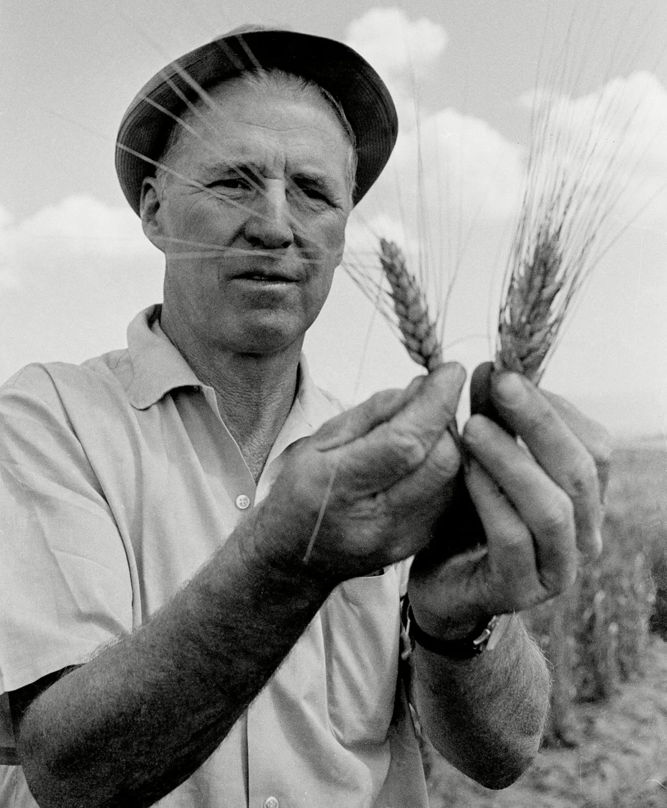

Dr. Norman Borlaug

Dr. Norman Borlaug working in the field.
Dr. Norman Borlaug (1914-2009) was an American agronomist and humanitarian, who led initiatives worldwide that contributed to the extensive increases in agricultural production, known as the Green Revolution.
He received the Nobel Peace Prize in 1970 in recognition of his contributions to world peace through increasing food supply.